23 Tilastot Ja R Tutuksi
23.1 Joukko-opin peruskäsitteitä
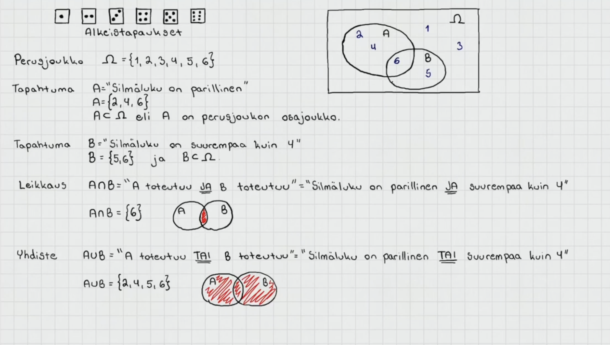
Perusjoukko = joukko, joka sisältää tapahtuman kaikki alkeistapaukset eikä muita alkioita
- merkataan omegalla Ω tai isolla S:llä
Alkeistapaus = tapahtuman mahdollinen lopputulos, esim. nopan silmäluku
merkitään aaltosulkujen sisään.
Esim Tapahtuma A = “nopanheiton silmäluku on parillinen” = {2,4,6}
Tapahtumaa, merkitään yleensä isolla kirjaimella esim. A, B tai C
Osajoukko = pienempi osa perusjoukosta, tai toisesta osajoukosta
Esim. Tapahtuma A = {2,4,6} on perusjoukon S = {1,2,3,4,5,6} osajoukko
osajoukkoa merkitään kyljelleen käännetyllä U kirjaimella ⊂
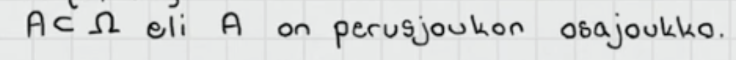
Leikkaus = kahden joukon yhteiset alkeistapaukset
- merkataan päälaelleen käännetyllä U:lla ∩
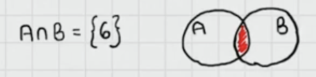
Yhdiste = kahden joukon yhdistelmä eli kaikki alkeistapaukset, jotka kuuluvat joukkoon A tai joukkoon B
- inklusiivinen TAI eli yhdisteeseen kuuluu kaikki alkiot, jotka kuuluvat jompaan kumpaan joukkoon tai molempiin.
- merkataan normaalilla U:lla ∪
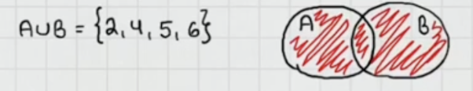
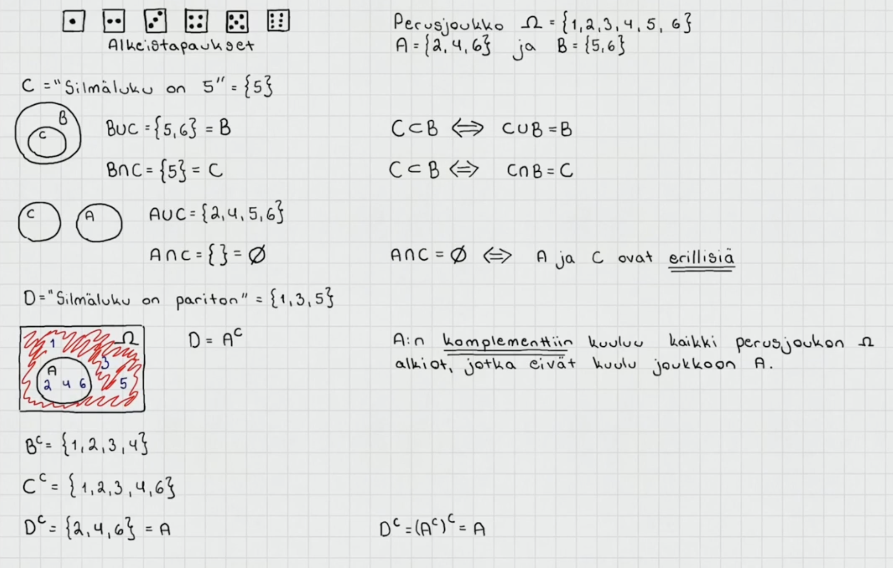
Tapahtuma C = “Silmäluku on 5” = {5}
- Tapahtuma C on tapahtuman B = {5,6} osajoukko
Joukkojen B ja C yhdiste on {5,6} = B
- Eli osajoukon ja joukon yhdiste on sama kuin alkuperäinen joukko
Erilliset joukot ovat sellaisia, joilla ei ole yhtään yhteistä alkiota
Esim joukot C ={5} ja A = {2,4,6} ovat erilliset
C:n ja A:n leikkaus on tyhjä joukko eli siinä ei ole yhtään alkiota
Tyhjää joukkoa merkitään ∅
Tapahtuma D = “Silmäluku on pariton” = {1,3,5}
- Tapahtuma D on tapahtuma A:n komplemetti (vastatapahtuma) eli siihen kuuluu kaikki perusjoukon alkiot, jotka eivät kuulu joukkoon A
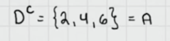
Joukon komplementin komplementti on alkuperäinen joukko itse
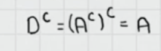
23.2 De Morganin lait
A:n ja B:n leikkauksen komplementti on A:n komplementin ja B:n komplementin yhdiste
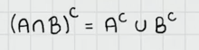
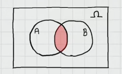
A:n ja B:n leikkaus
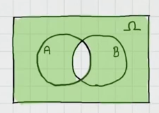
A:n ja B:n leikkauksen komplementti
- toisin sanottuna siis leikkauksen ulkopuolinen alue
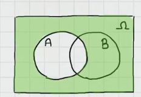
Pelkästään A:n komplementti väritettynä
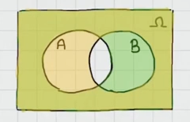
A:n komplementin ja B:n kompelentin yhdiste väritettynä
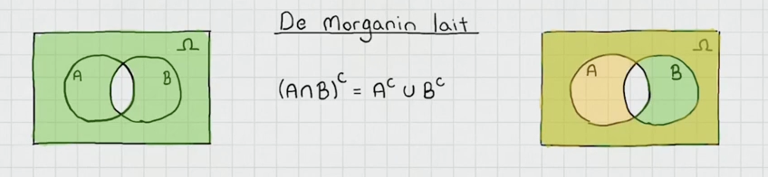
Vassen venn-diagrammi kuvaa yhtälön vasempaa puolta ja oikea diagrammi kuvaa oikeaa
- yhtälö siis pätee eli A:n ja B:n leikkauksen komplementti on sama kuin A:n komplementin ja B:n komplementin yhdiste
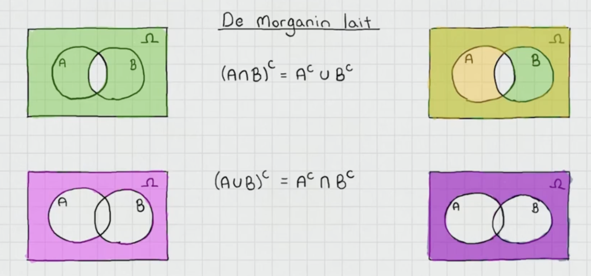
De morganin lait ovat siis
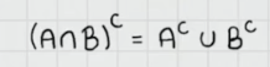
- A:n ja B:n leikkauksen komplementti on sama kuin A:n komplementin ja B:n komplementin yhdiste
Toinen sääntö
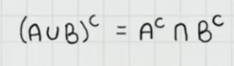
- A:n ja B:n yhdisteen komplementti on sama kuin A:n komplementin ja B:n komplementin leikkaus
23.3 Todennäköisyyden ominaisuuksia

Tapahtuman A todennäköisyyttä merkataan P(A)
1) 0 ≤ P(A) ≤ 1
- Todennäköisyys on aina välillä 0 ja 1. 1 tarkoittaa varmaa tapahtumaa ja 0 mahdotonta
2) P(Ω) = 1
- Perusjoukon todennäköisyys on 1, koska se sisältää kaikki alkeistapaukset ja on siksi varma tapahtuma
3) P(A^c) = 1 -P(A)
- A:n komplementin todennäköisyys on 1 - A:n todennäköisyys
4) Tapahtumien A ja B yhdisteen todennäköisyys on tapahtumien A ja B todennäköisyyksien summa vähennettynä tapahtumien A ja B leikkauksella. Leikkaus vähennetään, koska se sisältyy molempien A ja B todennäköisyyteen, joten niiden summassa leikkaus on laskettuna kahteen kertaan. Kun se vähennetään, niin se on laskettuna vain kertaalleen ja saadaan yhdisteen oikea todennäköisyys.
5) Tyhjän tapahtuman todennäköisyys on 0 eli se on mahdoton
6) Kun tapahtumat A ja B ovat erilliset eli niillä ei ole leikkausta, niin tapahtumien A ja B yhdisteen todennäköisyys voidaan laskea summaamalla tapahtumien A ja B todennäköisyys.